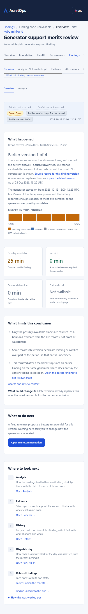
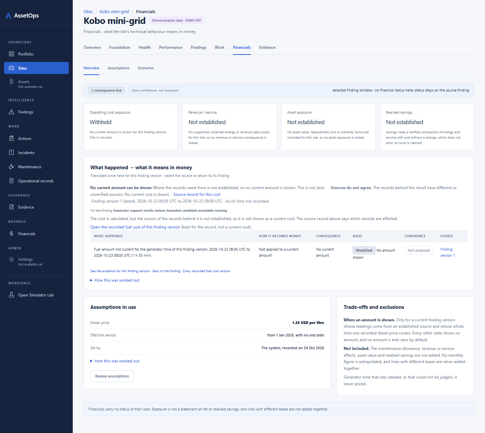
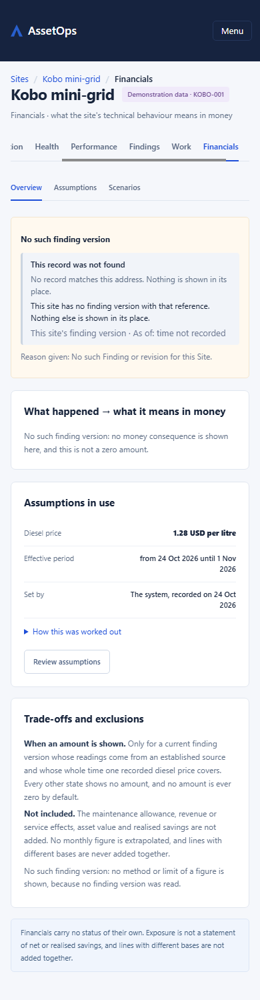
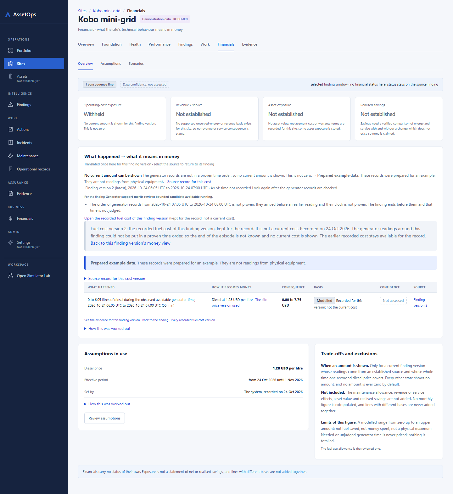

Cross-cutting, cited not re-described: B1-01/B2-01 (no white topbar) and B1-04/B2-36 (rail 'Not available yet' on Assets/Settings) on every pair; B1-07/B2-03 (14 px panel sentences vs mock 12 px .prose) on finding (13-29 paragraphs at 14 px) and 1-2 lines on finding-evidence, financials and assumptions page 2; B2-02 (page-local window control) on sitefindings (From/To UTC day + Show Findings); B1-02/B2-04 (tall 390 dark header) on finding-history notfound 390 (189 px vs 92 px elsewhere).
Cite existing batch IDs; shared fix owner is the shell/typography seam.
B3-01
finding, finding-evidence, finding-history
Finding Overview renders a second 'Overview | Analysis' row (LocalViews, sites/SiteFinding.tsx:144) under the section tabs, while the section-row 'Analysis' entry is the disabled 'Analysis · Not available yet' and Evidence/History show the helper line 'Analysis unavailable for this Finding section; use the Finding overview and evidence.' The Analysis view exists (?view=analysis) and 'Where to look next' links 'Open Analysis'. Mock: one 6-tab row with a live Analysis tab. Three nav rows at 390.
(c) D3: one section row; the Analysis tab resolves the existing Analysis view; remove the duplicate row and the contradictory helper. R21's 'Not available yet' is no longer true for Finding Analysis (Architect to narrow R21).
B3-02
finding, finding-evidence, finding-history
The section row carries a 7th right-aligned link 'What this finding means in money' (wraps to its own line at 390). Mock has 6 tabs; money access is 'Inspect financial assumptions' inside What to do next. W1-F3 coordinator decision, no register row.
(b) D2 register row (owner approval), or (c) D3 move to the mock position.
B3-03
finding, finding-evidence, finding-history
Breadcrumb 'Findings / Finding code unavailable / {section} · site'; subtitle 'Kobo mini-grid · generator support finding' (no F-code, no date); header 'Open site' action missing (rendered only on Alternatives, shell/SiteAnalyticsFrames.tsx:886-893). Child tabs keep the Finding title/subtitle where the mock uses the page question as subtitle ('Which accepted records support this Finding?', 'How did the conclusion and workflow change?').
Code: (b) D1, extend R65/R74 (no public Finding code) to W1 mini. Open site: (c) D3 (route mounted, already built for Alternatives). Child subtitle: (b) D2.
B3-04
finding
Status strip: Priority/Confidence 'not assessed' (dashed), no Claim or Lens chip; adds currentness and 'Latest version (n of m)' chips; period '2026-10-15 12:00-13:30 UTC' where the mock is site-local (EAT).
Chips: (b) D1 (no priority/confidence/lens read). Time zone: (c) D3 candidate by R23/R24 precedent (as B2-21) unless the Architect rules D2.
B3-05
finding
What happened: no panel-head 'Inspect evidence' link (Evidence tab mounted); 'Selected hour' becomes 'Period covered' with 18-23 small blocks; adds source and As-of lines and a disclosure. 1.14-1.24x (1.41x at 390 late-stale).
Metric cards: mock Candidate runtime / Associated fuel / Cost exposure $3.31-3.97 / Capability support 4/5; app Possibly avoidable / Needed / Cannot determine / 'Fuel and cost: Not available - No fuel or money estimate is made on this page'. On s405 P01 the selected revision is PRICED (0.00 to 15.82 USD on its own Financials view) yet the Finding still says Not available.
Cost card: (c) D3 candidate - a current bounded amount exists for the exact revision (D-2026-10-04 practitioner-first presentation adds the consequence to the readable Finding). Capability card: (b) D1.
B3-07
finding
What to do next: no recommendation heading ('Review the generator stop threshold'); button 'Open the recommendation' only; the mock's 'Inspect financial assumptions' link is absent though /financials/assumptions is mounted.
Link: (c) D3 Low. Heading: (b) D1/D4 (recommendation title not read on the Overview).
B3-08
finding
What limits: mock link 'See analysis and alternatives' replaced by 'Access and review context'; app lists 2-4 bullets plus 'What could change it'. 0.97-1.36x at 1440, 1.18-1.91x at 390.
Link: (c) D3 (Analysis view and W4-03 Alternatives are mounted). Height: (a) W1-F5b ruling -> register; 1.91x at 390 (s408 priced) exceeds the ruled case -> new measured reason.
B3-09
finding
Where to look next: mock Analysis / Evidence / Alternatives / Linked action; app Analysis / Evidence / History / Dispatch day / Related Findings. Alternatives item missing although W4-03 mounted it after the W1-F5b ruling; Linked action absent (no Action in s404/s405/s408). 1.24-1.30x at 1440, 1.41-1.55x at 390.
Alternatives omission: (c) D3. Linked action: (b) D1 state (no linked Action). Extra items and height: (a) W1-F5b ruling -> register.
B3-10
finding, finding-evidence, finding-history
Refused (unknown Finding): Evidence/History h1 shows the constant 'Generator support review' (sites/SiteFindingEvidence.tsx:48 FINDING_NAME) for a Finding that does not exist (the root shows 'Finding'). At 390 the section entry 'Alternatives for this Finding unavailable' wraps to 4 lines inside the tab row and misaligns it.
(c) D3 Low copy (no asserted Finding type on a refused read) and (c) D3 layout (short tab label; note outside the row).
B3-11
finding-evidence
Evidence bundle: adds a Records column (5 vs 4); Source 'Source not named' / '3 sources, not named' vs device codes; Coverage/Use 'Not available'; adds a state paragraph, a 'not available yet' line and a disclosure: 1.43x/1.57x. Lineage: mock 'Open claim evidence' link; app trail legend + 'Back to this version of the Finding': 1.26x at 1440 but 2.18x at 390.
Bundle: (a) W1-F5b ruling -> register D1 (coverage/use not computed). Source names: Architect to check whether bound device names exist (then D3) else D1. Lineage 2.18x at 390 exceeds the ruled 1.26x -> new measured reason.
B3-12
finding-history
Revision history: column 'Version recorded' vs 'Time' (UTC 'YYYY-MM-DD HH:MM' vs site-local '6 Oct · 16:00'); Event cells carry version/state/select links; adds a state line, headline, 'Show all N versions' disclosure, Related Findings, replay sentence and disclosure: 2.11x/3.50x latest, 2.61x/4.25x version 1, 1.55x/2.30x s408. No 'Recommendation prepared' event row.
Height: (a) W1-F5b ruling covers the additions but not 3.5-4.25x at 390 -> new measured reason or cap. Time zone: (c) D3 candidate (R23/R24). Recommendation event: (b) D1.
B3-13
sitefindings
Order: mock lens chips -> scope strip -> panel; app scope strip -> panel containing chips and date controls. Chips Cost/Risks/Opportunities read 'Not available yet' although estate lens routes /findings/cost|risks|opportunities exist (W3-01). The strip lacks 'Manage in Findings' (/findings mounted) and replaces 'Scoped to Kobo · 3 open' with count + currentness chip + sentence.
Order/chips in panel: (a) W1-F5b ruling -> register D2. Missing 'Manage in Findings': (c) D3. Site lens chips: (b) D5 (site-scoped lens filter not built) or (c) D3 if the estate lens can be Site-scoped - Architect.
B3-14
sitefindings
Table: 8 columns (adds Period); Domain is plain text where the mock links to the Performance view (subtitle 'Domain links back to the Performance view'); Priority/Confidence/Lens 'Not assessed'; Main consequence 'Not in this list'; no F-code; related links under titles; head link 'Open the newest Finding'; the line 'Opportunity index unavailable; open the renewable evaluation...' has no link though opportunity-finding is mounted (W4-03). 1.76x/1.66x stocked, 1.58x/1.51x page 2. At 390 the table scrolls 1223 px inside 318 px (readable; no page overflow).
Domain link: (c) D3 (dispatch route mounted). Opportunity line link: (c) D3 Low. Not assessed / consequence / code: (b) D1. Period column and height: (a) W1-F5b ruling -> register.
B3-15
financials
Strip lacks the 'Portfolio roll-up' link (/portfolio and /financials mounted in W3). KPI: mock $3.31-3.97 / Unavailable / Scenario only + View detail / Not established; app amount or Withheld / Not established x3. Bridge table 1 row vs 3 (no maintenance-allowance or stored-energy line), Confidence 'Not assessed', Source 'Finding version n' vs 'F-104'. Panel adds a state paragraph, notes, boxed recorded-cost block, links line and disclosure: 1.20-1.38x at 1440, 1.70-1.84x at 390; the s408 historical cost-version view 2.11x/3.10x.
Portfolio link: (c) D3 Low. KPI/rows: (b) D1 (no revenue, asset, maintenance or battery line source). Height: (a) W1-F5b ruling for the state paragraph; the s408 recorded-cost block (2.11x/3.10x) needs a new measured reason.
B3-16
financials
Assumptions in use: no Maintenance accrual / Currency / Interpretation rows; 'Edit example assumptions' -> 'Review assumptions' + disclosure. Trade-offs: the mock 'Inspect technical basis' link is absent; 1.20x/1.59x.
(b) D1 (no maintenance accrual source, no edit capability); missing link (c) D3 Low; height (a) W1-F5b ruling.
B3-17
assumptions
Interpretation history: two tables (fuel-cost versions with 4-6 line cells, plus a 'Price versions recorded' table and disclosures) vs the mock's one 2-row table (Version / Fuel price / Maintenance / Provenance / Status). 8.64x at 1440 and 17.0x at 390 (default and T3, 7 rows); 5.31x/10.13x (T1 and s405 single price, 4 rows); 4.46x/7.00x (page 2); 2.63x/4.06x (mixed). W1-F5b ruled for 3 price versions only.
(c) D3 candidate: default page size / compact rows (history_limit already exists) or an Architect measured cap from the worst-case fixture; the W1-F5b reason does not cover these magnitudes.
B3-18
assumptions
Financial assumptions: no Maintenance accrual field; edit disabled with reason (no sign-in); the mock 'Return to financial overview' link is absent; adds a 'When each price applies (n prices)' table disclosure. Notice order: mock notice above the panels (mockup-only text), app notice between Financial assumptions and Interpretation history. Impact preview 'Preview not available'. 1.38-1.64x.
App: What happened | What limits this conclusion | What to do next | Where to look next Mock: What happened | What limits this conclusion | What to do next | Where to look next
App: What happened | What limits this conclusion | What to do next | Where to look next Mock: What happened | What limits this conclusion | What to do next | Where to look next
App: What happened | What limits this conclusion | What to do next | Where to look next Mock: What happened | What limits this conclusion | What to do next | Where to look next
App: What happened | What limits this conclusion | What to do next | Where to look next Mock: What happened | What limits this conclusion | What to do next | Where to look next
App: What happened | What limits this conclusion | What to do next | Where to look next Mock: What happened | What limits this conclusion | What to do next | Where to look next
App: What happened | What limits this conclusion | What to do next | Where to look next Mock: What happened | What limits this conclusion | What to do next | Where to look next
App: What happened | What limits this conclusion | What to do next | Where to look next Mock: What happened | What limits this conclusion | What to do next | Where to look next
App: What happened | What limits this conclusion | What to do next | Where to look next Mock: What happened | What limits this conclusion | What to do next | Where to look next
App: What happened | What limits this conclusion | What to do next | Where to look next Mock: What happened | What limits this conclusion | What to do next | Where to look next
App: What happened | What limits this conclusion | What to do next | Where to look next Mock: What happened | What limits this conclusion | What to do next | Where to look next
App: What happened | What limits this conclusion | What to do next | Where to look next Mock: What happened | What limits this conclusion | What to do next | Where to look next
App: What happened | What limits this conclusion | What to do next | Where to look next Mock: What happened | What limits this conclusion | What to do next | Where to look next
What happened 471/379 = 1.24
What limits this conclusion 390/244 = 1.6 >1.3
What to do next 199/255 = 0.78
Where to look next 628/404 = 1.55 >1.3
App

Mock
finding-evidence
finding-evidence · labelled · 1440
/sites/KOBO-001/findings/f1753882-7d2c-4b57-b00d-11a74c44f1c7/evidence?revision_id=3a9738f5-ec76-4ac9-a2df-d59909e0d886 panel count/order match; differences listed as proposals; 1 panel(s) >1.3x need ruling/reason Findings: B3-X1, B3-01, B3-02, B3-03, B3-11
App: Findings at this site Mock: Findings at this site
Findings at this site 562/460 = 1.22
AppMock
financials
financials · mixed-withheld · 1440
/sites/KOBO-001/financials?finding_id=4f566b9c-fb13-4d4b-8d96-d8eff49e94ac&revision_id=e46abda4-4c99-49fa-ae97-3e79ce3f665d panel count/order match; differences listed as proposals; 1 panel(s) >1.3x need ruling/reason Findings: B3-X1, B3-15, B3-16
App: What happened → what it means in money | Assumptions in use | Trade-offs and exclusions Mock: What happened → what it means in money | Assumptions in use | Trade-offs and exclusions
What happened → what it means in money 397/288 = 1.38 >1.3
Assumptions in use 275/306 = 0.9
Trade-offs and exclusions 295/306 = 0.96
App

Mock
financials · mixed-withheld · 390
/sites/KOBO-001/financials?finding_id=4f566b9c-fb13-4d4b-8d96-d8eff49e94ac&revision_id=e46abda4-4c99-49fa-ae97-3e79ce3f665d panel count/order match; differences listed as proposals; 1 panel(s) >1.3x need ruling/reason Findings: B3-X1, B3-15, B3-16
App: What happened → what it means in money | Assumptions in use | Trade-offs and exclusions Mock: What happened → what it means in money | Assumptions in use | Trade-offs and exclusions
What happened → what it means in money 683/372 = 1.84 >1.3
App: What happened → what it means in money | Assumptions in use | Trade-offs and exclusions Mock: What happened → what it means in money | Assumptions in use | Trade-offs and exclusions
What happened → what it means in money 103/288 = 0.36
App: What happened → what it means in money | Assumptions in use | Trade-offs and exclusions Mock: What happened → what it means in money | Assumptions in use | Trade-offs and exclusions
What happened → what it means in money 149/372 = 0.4
App: What happened → what it means in money | Assumptions in use | Trade-offs and exclusions Mock: What happened → what it means in money | Assumptions in use | Trade-offs and exclusions
What happened → what it means in money 99/288 = 0.34
App: What happened → what it means in money | Assumptions in use | Trade-offs and exclusions Mock: What happened → what it means in money | Assumptions in use | Trade-offs and exclusions
What happened → what it means in money 119/372 = 0.32
Assumptions in use 308/306 = 1.01
Trade-offs and exclusions 315/244 = 1.29
App

Mock
financials · priced · 1440
/sites/KOBO-001/financials?finding_id=f1753882-7d2c-4b57-b00d-11a74c44f1c7&revision_id=3a9738f5-ec76-4ac9-a2df-d59909e0d886&consequence_revision_id=2fce1844-384a-4ffd-874c-221b8416c46e panel count/order match; differences listed as proposals; 1 panel(s) >1.3x need ruling/reason Findings: B3-X1, B3-15, B3-16
App: What happened → what it means in money | Assumptions in use | Trade-offs and exclusions Mock: What happened → what it means in money | Assumptions in use | Trade-offs and exclusions
What happened → what it means in money 609/288 = 2.11 >1.3
Assumptions in use 275/306 = 0.9
Trade-offs and exclusions 368/306 = 1.2
App

Mock
financials · priced · 390
/sites/KOBO-001/financials?finding_id=f1753882-7d2c-4b57-b00d-11a74c44f1c7&revision_id=3a9738f5-ec76-4ac9-a2df-d59909e0d886&consequence_revision_id=2fce1844-384a-4ffd-874c-221b8416c46e panel count/order match; differences listed as proposals; 2 panel(s) >1.3x need ruling/reason Findings: B3-X1, B3-15, B3-16
App: What happened → what it means in money | Assumptions in use | Trade-offs and exclusions Mock: What happened → what it means in money | Assumptions in use | Trade-offs and exclusions
What happened → what it means in money 1152/372 = 3.1 >1.3
App: What happened → what it means in money | Assumptions in use | Trade-offs and exclusions Mock: What happened → what it means in money | Assumptions in use | Trade-offs and exclusions
What happened → what it means in money 347/288 = 1.2
Assumptions in use 275/306 = 0.9
Trade-offs and exclusions 368/306 = 1.2
AppMock
financials · priced-current · 390
/sites/KOBO-001/financials?finding_id=b6b17a85-0b1d-4b2e-87f1-a2756b57e745&revision_id=ffc6bc5c-fef3-4773-85fa-13a83ab8d0f0 panel count/order match; differences listed as proposals; 2 panel(s) >1.3x need ruling/reason Findings: B3-X1, B3-15, B3-16
App: What happened → what it means in money | Assumptions in use | Trade-offs and exclusions Mock: What happened → what it means in money | Assumptions in use | Trade-offs and exclusions
What happened → what it means in money 631/372 = 1.7 >1.3
App: What happened → what it means in money | Assumptions in use | Trade-offs and exclusions Mock: What happened → what it means in money | Assumptions in use | Trade-offs and exclusions
What happened → what it means in money 374/288 = 1.3
Assumptions in use 275/306 = 0.9
Trade-offs and exclusions 295/306 = 0.96
AppMock
financials · quantity-unavailable · 390
/sites/KOBO-001/financials?finding_id=f1753882-7d2c-4b57-b00d-11a74c44f1c7&revision_id=26ac2bed-1349-4726-9647-00d6d135f898 panel count/order match; differences listed as proposals; 1 panel(s) >1.3x need ruling/reason Findings: B3-X1, B3-15, B3-16
App: What happened → what it means in money | Assumptions in use | Trade-offs and exclusions Mock: What happened → what it means in money | Assumptions in use | Trade-offs and exclusions
What happened → what it means in money 654/372 = 1.76 >1.3
App: What happened → what it means in money | Assumptions in use | Trade-offs and exclusions Mock: What happened → what it means in money | Assumptions in use | Trade-offs and exclusions
What happened → what it means in money 374/288 = 1.3
Assumptions in use 275/306 = 0.9
Trade-offs and exclusions 295/306 = 0.96
AppMock
financials · unpriced · 390
/sites/KOBO-001/financials?finding_id=8acabc0a-10c6-4e96-96b9-18804e48f7b3&revision_id=27ffbb1e-ef1f-4532-b33d-c3538a29ef7c panel count/order match; differences listed as proposals; 1 panel(s) >1.3x need ruling/reason Findings: B3-X1, B3-15, B3-16
App: What happened → what it means in money | Assumptions in use | Trade-offs and exclusions Mock: What happened → what it means in money | Assumptions in use | Trade-offs and exclusions
What happened → what it means in money 638/372 = 1.72 >1.3
Assumptions in use 308/306 = 1.01
Trade-offs and exclusions 315/244 = 1.29
AppMock
assumptions
assumptions · T3-page2 · 1440
/sites/KOBO-001/financials/assumptions?recorded_at=2026-10-24T13%3A33%3A23.010748%2B00%3A00&history_after=eyJhZnRlciI6WyIyMDI2LTEwLTI0VDEzOjMyOjIxLjI1MDc0MCswMDowMCIsIjJmY2UxODQ0LTM4NGEtNGZmZC04NzRjLTIyMWI4NDE2YzQ2ZSJdLCJmZW5jZSI6InNjaDEtMWJkNzJkNWFlZTM4ODcyNDkzYWEzNjE3NThhOTFlYzlhNzBlYmI4NTdkYjExZjcwYWE3MjU1MTg1ZDIyYjA1YSIsImxpbWl0IjoyLCJyZWNvcmRlZF9hdCI6IjIwMjYtMTAtMjRUMTM6MzM6MjMuMDEwNzQ4KzAwOjAwIiwic2l0ZV9pZCI6Ijc5MGEwNzRjLTJiZmUtNGQ1ZS05ZGZiLTUyOGFiMDQzYjFiOSIsInRlbmFudF9pZCI6IjI4OTg3ZjQ5LTNmZGEtNGM5MS05YjBkLTVlZjU0MTg3ZjE2YyIsInYiOjF9&history_limit=2 panel count/order match; differences listed as proposals; 2 panel(s) >1.3x need ruling/reason Findings: B3-X1, B3-17, B3-18
App: Financial assumptions | Impact preview | Interpretation history Mock: Financial assumptions | Impact preview | Interpretation history
Financial assumptions 567/368 = 1.54 >1.3
Impact preview 256/368 = 0.7
Interpretation history 942/211 = 4.46 >1.3
AppMock
assumptions · T3-page2 · 390
/sites/KOBO-001/financials/assumptions?recorded_at=2026-10-24T13%3A33%3A23.010748%2B00%3A00&history_after=eyJhZnRlciI6WyIyMDI2LTEwLTI0VDEzOjMyOjIxLjI1MDc0MCswMDowMCIsIjJmY2UxODQ0LTM4NGEtNGZmZC04NzRjLTIyMWI4NDE2YzQ2ZSJdLCJmZW5jZSI6InNjaDEtMWJkNzJkNWFlZTM4ODcyNDkzYWEzNjE3NThhOTFlYzlhNzBlYmI4NTdkYjExZjcwYWE3MjU1MTg1ZDIyYjA1YSIsImxpbWl0IjoyLCJyZWNvcmRlZF9hdCI6IjIwMjYtMTAtMjRUMTM6MzM6MjMuMDEwNzQ4KzAwOjAwIiwic2l0ZV9pZCI6Ijc5MGEwNzRjLTJiZmUtNGQ1ZS05ZGZiLTUyOGFiMDQzYjFiOSIsInRlbmFudF9pZCI6IjI4OTg3ZjQ5LTNmZGEtNGM5MS05YjBkLTVlZjU0MTg3ZjE2YyIsInYiOjF9&history_limit=2 panel count/order match; differences listed as proposals; 2 panel(s) >1.3x need ruling/reason Findings: B3-X1, B3-17, B3-18
App: Financial assumptions | Impact preview | Interpretation history Mock: Financial assumptions | Impact preview | Interpretation history
Financial assumptions 923/563 = 1.64 >1.3
Impact preview 256/270 = 0.95
Interpretation history 1883/269 = 7.0 >1.3
AppMock
assumptions · default · 1440
/sites/KOBO-001/financials/assumptions panel count/order match; differences listed as proposals; 2 panel(s) >1.3x need ruling/reason Findings: B3-X1, B3-17, B3-18
App: Financial assumptions | Impact preview | Interpretation history Mock: Financial assumptions | Impact preview | Interpretation history
Financial assumptions 545/368 = 1.48 >1.3
Impact preview 256/368 = 0.7
Interpretation history 1823/211 = 8.64 >1.3
AppMock
assumptions · default · 390
/sites/KOBO-001/financials/assumptions panel count/order match; differences listed as proposals; 2 panel(s) >1.3x need ruling/reason Findings: B3-X1, B3-17, B3-18
App: Financial assumptions | Impact preview | Interpretation history Mock: Financial assumptions | Impact preview | Interpretation history
Financial assumptions 901/563 = 1.6 >1.3
Impact preview 256/270 = 0.95
Interpretation history 4572/269 = 17.0 >1.3
AppMock
assumptions · mixed-withheld · 1440
/sites/KOBO-001/financials/assumptions panel count/order match; differences listed as proposals; 2 panel(s) >1.3x need ruling/reason Findings: B3-X1, B3-17, B3-18
App: Financial assumptions | Impact preview | Interpretation history Mock: Financial assumptions | Impact preview | Interpretation history
Financial assumptions 506/368 = 1.38 >1.3
Impact preview 256/368 = 0.7
Interpretation history 554/211 = 2.63 >1.3
AppMock
assumptions · mixed-withheld · 390
/sites/KOBO-001/financials/assumptions panel count/order match; differences listed as proposals; 2 panel(s) >1.3x need ruling/reason Findings: B3-X1, B3-17, B3-18
App: Financial assumptions | Impact preview | Interpretation history Mock: Financial assumptions | Impact preview | Interpretation history
Financial assumptions 822/563 = 1.46 >1.3
Impact preview 256/270 = 0.95
Interpretation history 1091/269 = 4.06 >1.3
AppMock
assumptions · recorded-T1 · 1440
/sites/KOBO-001/financials/assumptions?recorded_at=2026-10-24T13%3A31%3A59.108265%2B00%3A00 panel count/order match; differences listed as proposals; 2 panel(s) >1.3x need ruling/reason Findings: B3-X1, B3-17, B3-18
App: Financial assumptions | Impact preview | Interpretation history Mock: Financial assumptions | Impact preview | Interpretation history
Financial assumptions 527/368 = 1.43 >1.3
Impact preview 256/368 = 0.7
Interpretation history 1121/211 = 5.31 >1.3
AppMock
assumptions · recorded-T1 · 390
/sites/KOBO-001/financials/assumptions?recorded_at=2026-10-24T13%3A31%3A59.108265%2B00%3A00 panel count/order match; differences listed as proposals; 2 panel(s) >1.3x need ruling/reason Findings: B3-X1, B3-17, B3-18
App: Financial assumptions | Impact preview | Interpretation history Mock: Financial assumptions | Impact preview | Interpretation history
Financial assumptions 844/563 = 1.5 >1.3
Impact preview 256/270 = 0.95
Interpretation history 2726/269 = 10.13 >1.3
AppMock
assumptions · recorded-T3 · 1440
/sites/KOBO-001/financials/assumptions?recorded_at=2026-10-24T13%3A33%3A23.010748%2B00%3A00 panel count/order match; differences listed as proposals; 2 panel(s) >1.3x need ruling/reason Findings: B3-X1, B3-17, B3-18
App: Financial assumptions | Impact preview | Interpretation history Mock: Financial assumptions | Impact preview | Interpretation history
Financial assumptions 567/368 = 1.54 >1.3
Impact preview 256/368 = 0.7
Interpretation history 1823/211 = 8.64 >1.3
AppMock
assumptions · recorded-T3 · 390
/sites/KOBO-001/financials/assumptions?recorded_at=2026-10-24T13%3A33%3A23.010748%2B00%3A00 panel count/order match; differences listed as proposals; 2 panel(s) >1.3x need ruling/reason Findings: B3-X1, B3-17, B3-18
App: Financial assumptions | Impact preview | Interpretation history Mock: Financial assumptions | Impact preview | Interpretation history
Financial assumptions 923/563 = 1.64 >1.3
Impact preview 256/270 = 0.95
Interpretation history 4572/269 = 17.0 >1.3
AppMock
assumptions · single-price · 1440
/sites/KOBO-001/financials/assumptions panel count/order match; differences listed as proposals; 2 panel(s) >1.3x need ruling/reason Findings: B3-X1, B3-17, B3-18
App: Financial assumptions | Impact preview | Interpretation history Mock: Financial assumptions | Impact preview | Interpretation history
Financial assumptions 506/368 = 1.38 >1.3
Impact preview 256/368 = 0.7
Interpretation history 1121/211 = 5.31 >1.3
AppMock
assumptions · single-price · 390
/sites/KOBO-001/financials/assumptions panel count/order match; differences listed as proposals; 2 panel(s) >1.3x need ruling/reason Findings: B3-X1, B3-17, B3-18
App: Financial assumptions | Impact preview | Interpretation history Mock: Financial assumptions | Impact preview | Interpretation history